Wkrętak nie służy do wklejania insertów — te wciska się lutownicą (Pinecil) z odpowiednią końcówką. Wkrętak tylko wkręca śrubę w gotowy insert, a finalne dokręcenie rób ręcznie — unikniesz zerwania gwintu w mosiężnej wkładce. Najczęstsza przyczyna zniszczonych gwintów to cross-threading, nie za mocne dokręcenie.
Granice momentu: M2/laptop ≤ 0.4 Nm · elektronika 0.2-0.75 Nm · obudowy/drzewo 3-6 Nm. Szczegóły ↓
| Zdjęcie | Model | Sklep | Cena | Ocena | Moment / kontrola | Do czego |
|---|---|---|---|---|---|---|
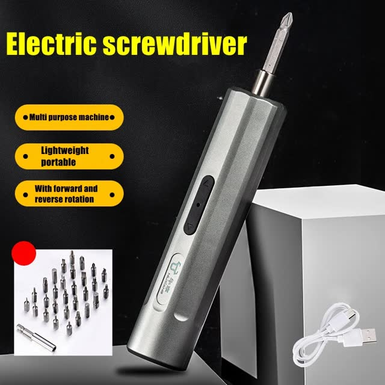 | Mini wkrętak USB-C (Choice) | AliExpress | 108 kr | 4.5★ (58, 426 zam.) | ~3.6-4.2V / brak kontroli | lekkie śruby, budżet min. |
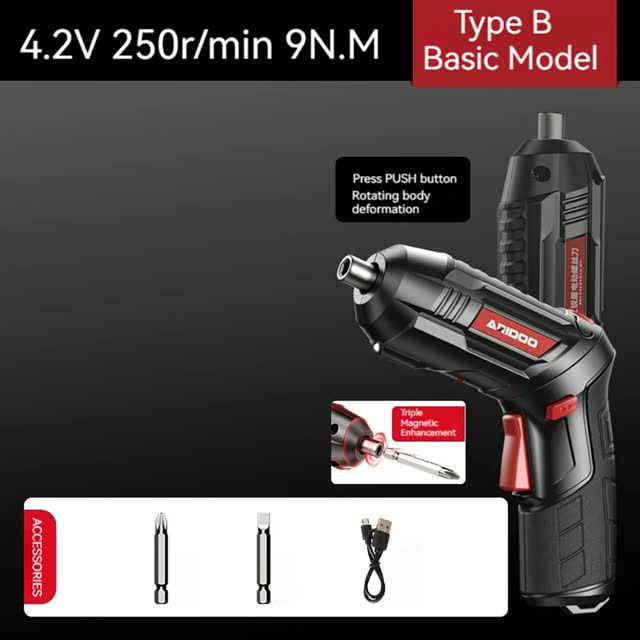 | 4.2V / 6 Nm / 1300 mAh / 250 rpm | AliExpress | 144 kr | 4.0★ (22) | 6 Nm / brak kontroli | mocny budżet (plastik) |
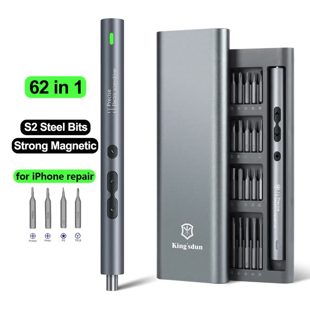 | 62/6-in-1 (N20, latarka) — BESTSELLER | AliExpress | 201 kr | 4.7★ (1867, 10k+ zam.) | precision / brak kontroli | elektronika budżetowo ⭐ |
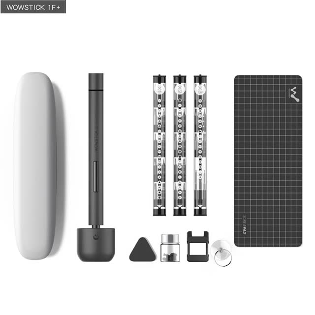 | Wowstick 1F Pro 64-in-1 | AliExpress | 258 kr | marka, bez opinii (oficjalny) | precision / brak (typowe minusem) | elektronika, design |
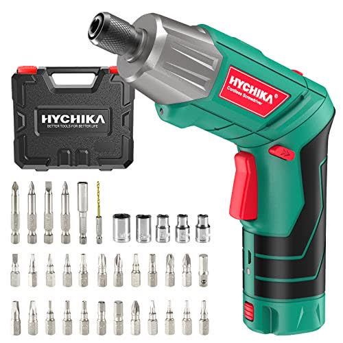 | HYCHIKA SD-4C 3.6V, 36 acc | Amazon.se | 268 kr | 4.4★ (13 226!) | 6 Nm / 1 prędkość | uniwersalny budżet |
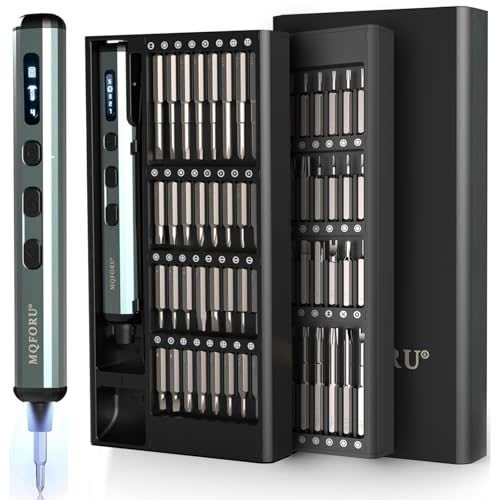 | MQFORU Mini 72-in-1, S2 | Amazon.se | 281 kr | 4.4★ (627) | 0.2-0.75 Nm / 5 nastaw + wyświetlacz | elektronika ESP32 ⭐ |
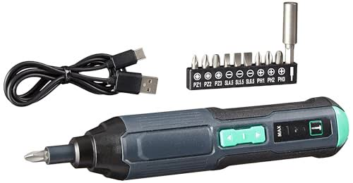 | Amazon Basics by SKIL 3.6V | Amazon.se | 295 kr | 4.5★ (927) | 5 Nm / 3 nastawy, USB-C | uniwersalny budżet+ |
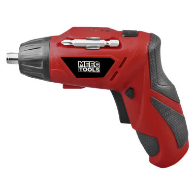 | Jula Meec mini 3.6V (978 rec.) | Jula 🇸🇪 | 99,90 kr | zobacz recenzje na stronie | 3.5 Nm / składany uchwyt | lokalnie dziś, awaryjnie |
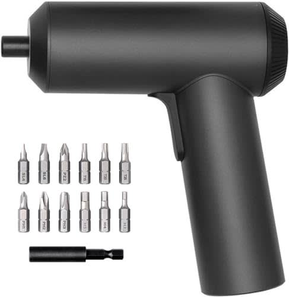 | Xiaomi Mi Cordless Screwdriver | Amazon.se | 393 kr | 4.7★ (812) — najwyżej! | ~5 Nm / bez sprzęgła | obudowy / drukarka / meble ⭐ |
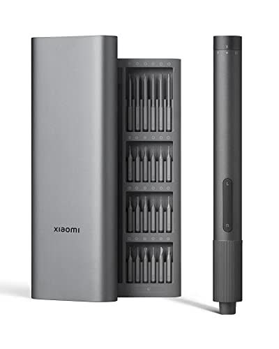 | Xiaomi Mi Precision Kit (24 bity) | Amazon.se | 445 kr | 4.5★ (1763) | low / słabe magnesy bitów | elektronika + etui |
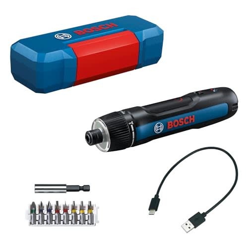 | Bosch Professional GO 3 | Amazon.se | 939 kr | 4.4★ (2479) | sprzęgło 7 nastaw, USB-C | premium: nic nie przekręcisz |
Kluczowy parametr to N·m i sposób jego ograniczania — nie liczba bitów w zestawie:
PRO: great value for money with plenty of torque
, działa ze wszystkimi bitami
CON: ładuje się TYLKO kablem USB-A→C (C-to-C nie działa); tylko 2 bity w zestawie
PRO: PL kupujący: wygląda, że ma 6 Nm, podwójna pozycja uchwytu
— moment jak Amazon za 268-295 kr, o połowę taniej
CON: całkowicie plastikowy
; jedno zgłoszenie braku bitów w paczce; ocena 4.0 = jakość loteryjna
PRO: perfect for fixing electronics, iPhones, game consoles
; latarka; można dokręcać ręcznie bezpośrednio przez uchwyt
CON: prędkość mogłaby być regulowana
; końcówki przeciętne przy intensywnym użyciu
PRO: najpopularniejszy „designerski” wkrętak — na Ali najtaniej (na Amazonie go w ogóle nie ma)
CON: społeczność: too weak for properly screwing M3 screws
; ładowanie tylko USB-A→C; EEVblog: meh stick
— ładny, ale moment poniżej klasy
PRO: at first I was doubtful… doesn't look powerful but works
— dużo 5★, rodzeństwo (4.9★/8000 zam.) za 297 kr
CON: brak wyraźnych powtarzalnych minusów w próbie
Miniware ES121 (kultowy) — na sesji szwedzkiej Ali: ES120/ES121 ~1820 kr, ES15S 314-1440 kr (część ofert bez opinii = ryzyko). Nie opłaca się vs EU/Bosch — szczegóły w sekcji społeczności.
PRO: great in all ways. Long battery and strong for its size
; ludzie motoryzują nim stoły IKEA — obudowy i profile drukarki bez problemu
CON: saknar friktion men det ok i allafall
(brak sprzęgła); mało bitów w podstawowym secie
PRO: 5 different torque settings are helpful
; wyświetlacz, 4× LED, magnetyzer, mata — praktycznie perfekcyjny do drobnych prac
CON: pojedyncze narzekanie na domknięcie etui — mało ostrych negatywów
PRO: surprisingly powerful with great battery life
; 3 nastawy Low/Med/High + USB-C; składany uchwyt
CON: tylko 10 bitów w zestawie (dokupisz za grosze)
PRO: prisvärd! Känns rejäl och funktionell
; I use it daily
; ratchet w zestawie, LED
CON: relativt svag, bara en hastighet
, plastig kvalitetskänsla
; wolny (200 rpm)
PRO: awesome tool if you work with electronics a lot — a wristsaver
; premium etui
CON: very poor magnet… almost no power
(3★); brak ładowania w etui; za słaby do M3 w druku
PRO: troligtvis den bästa lilla skruvdragare som finns
; bezszczotkowy, +20% momentu, ekosystem akcesoriów; w Clas Ohlson z 10 bitami za 499 kr klubbpris
CON: barnleksak — kan inte ens skruva i tunn plast
(1★ — za mały moment do twardych śrub); ładowanie ~2h
PRO: perfekt — maszyna, którą powinno się kupić dawno temu
; sprzęgło = idealne do delikatnego plastiku i heatsetów; Push&Go, E-clutch, USB-C
CON: går för snabbt, stannar inte direkt när man släpper
; ergonomia przełącznika; cena 3× Xiaomi
PRO: liegt gut in der Hand und erscheint recht robust… klaglos überstanden
; 2Ah = duża bateria
CON: za słaby do mocniejszych śrub
(2★)
PRO: en smidig elskruvmejsel med många tillbehör, fungerar perfekt
CON: too weak torque — on a lot of screws it's just too weak
— słaby moment powtarza się wielokrotnie
Najtańszy sensowny wkrętek w Szwecji: składany uchwyt (pistol/pilnik), LED, magnetyczny uchwyt, USB. Direct konkurent IKEA TRIXIG — o 49 kr taniej.
Korekta: legendarny „FIXA za 99 kr” już nie istnieje — został TRIXIG za 149 kr. Ocena 3.8 = najniższa w tej grupie (zwykły, bez fajerwerków).
Własna marka Kjell — mini z uchwytem bitów, USB. Trzecia opcja „idź dziś do sklepu i kup za 100”.
Jedyne miejsce z HOTO w SE. Design 10/10, ale 599-799 kr to przepłacenie vs Xiaomi 393 kr. Społeczność: wouldn't spend money unless on sale
; bateria niewymienna, były zgłoszenia awarii.
Odpowiednik Jula/IKEA, ale 2× drożej niż Jula. Bonus: Bosch IXO 7 z 10 bitami za 499 kr klubbpris (normalnie 699) — jeśli chcesz Boscha, to najtańsza droga.
To już nie „śrubokręt do elektroniki” tylko prawdziwa wkrętarka 10.8-12V — jeśli w przyszłości przyda się wiercenie w obudowach, 12V za 299 kr to bardzo tania opcja.
3× drożej niż Jula/IKEA/Kjell mini — Proshop odpada w tej kategorii (reszta to Makita/Einhell 18V solo 448-2437 kr).
| Model | Werdykt społeczności | Cytat + źródło |
|---|---|---|
| Miniware ES121/ES120 | Kultowy do elektroniki: kontrola momentu (4 tryby), motion control, OLED. ALE: ES121 ma ~25% mniej momentu niż ES120; 2 awarie u jednego użytkownika; w SE bardzo drogi (Ali-SE ~1820 kr) → nieopłacalny w SE | M2 screw shouldn't be torqued more than like 0.4nm— u/MaIakai, r/Tools + r/MINIWARE (awarie), NotEnoughTECH |
| Fanttik E1 Max / E2 Ultra | Polecane na r/3Dprinting do składania modeli/drukarek; nie ma ich na amazon.se — import z fanttik.com (EU) ~350-450 kr. Masa płatnych promocji = uważać na hype | wish it offered a little more torque, but for its size and price quite capable — you can hand-tighten beyond the motor's limit— u/Panama__Red, r/3Dprinting |
| Bosch Go / GO 3 | Sprzęgło chwalone jako top do „fragile plastic”; wytrzymałość (3.5 roku codziennego używania); realnie ~2.5 Nm | you can adjust it so you can use it for fine screws for fragile plastic electronic devices— u/jhgzjggjjhz, r/Tools |
| Wowstick | Ładny, ale za słaby do M3; ładowanie tylko A→C; meh stick(EEVblog) | I have a wow stick, it's too weak for properly screwing M3 screws— u/Adorable_Ad802, r/3Dprinting |
| Xiaomi Precision | Za słaby moment — użytkownicy odkładają w szufladę | rarely use for the lack of torque— u/LucasTheShep, r/computertechs |
| ArrowMax SES/M1 | Najbardziej „smart” (żyroskop, OLED, motion control) — ZDNET smartest precision screwdriver I've ever tested; ale 1275+ kr na Ali-SE | |
| Dremel Go | proper torque for small screws and threading plastic | u/n0wh4ch1ng, r/3Dprinting |
| CreationSpace CS0802 | BEST VALUE OVERALL PRECISION SCREWDRIVERw teście 10 modeli (Cheap&Cheerful EP1, 162k views) — ale dostępność w UE słaba |
I think most don't use electronic screwdrivers [w PC] because they're not torque spec— u/billythygoat, r/Tools — stąd nastawy momentu (MQFORU 5×, AB/SKIL 3×, Bosch GO 7×) są realnie przydatne, a nie marketingiem
| Źródło | Status | Metoda / rungi | Wynik |
|---|---|---|---|
| Amazon.se | ✅ COVERED | Lightpanda CDP search ×6 + 10× PDP + recenzje (managed Chromium CDP) | ~45 pozycji, 10 deep |
| AliExpress | ✅ COVERED | deep v2 scripts (HTTP+fallback chain), 5 zapytań + 9× PDP + recenzje top 3 | 65-87 uniq/zapytanie, 12 deep |
| Biltema.se | ✅ COVERED | browser (SPA, curl=pusty shell) | 7 pozycji |
| Jula.se | ✅ COVERED | browser (curl 403) | 6 pozycji, mini 99,90 kr |
| Clasohlson.com | ✅ COVERED | browser (search API 406 → kategoria) | 7 pozycji |
| Kjell.com | ✅ COVERED | browser (kategoria) | 7 pozycji + HOTO |
| IKEA.se | ✅ COVERED | browser (search + PDP) | 2 TRIXIG (FIXA 99 nie istnieje) |
| Proshop.se | ✅ COVERED | browser | odrzucone (289 kr min., reszta pro-tools) |
| Reddit (r/Tools, r/3Dprinting, r/MINIWARE, r/computertechs…) | ✅ COVERED | DDG HTML + Arctic Shift API (reddit.com/old/redlib zablokowane — 403/Anubis) | 8 wątków deep, cytaty z linkami |
| YouTube | ✅ COVERED | curl ytInitialData + watch-page descriptions | 10 wyników, 4 deep |
| Artykuły/testy | ✅ COVERED | web_fetch: NerdTechy, ZDNET ×3, ToolGuyd, CNN Underscored | parametry N·m, rankingi 2026 |
| Blocket | ✅ COVERED | blocket_search.py ×2 | nic wartościowego |
| Tradera | ✅ COVERED | tradera_search.py ×2 | nic wartościowego |